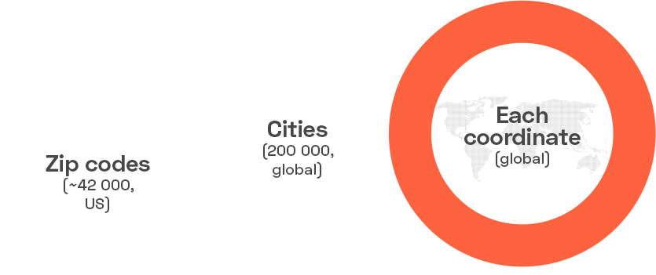
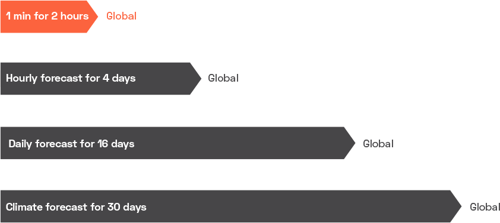

For each point on the globe, we provide historical,
current and forecasted weather data via light-speed APIs.
Other forecasts:
hourly (4-day), daily (16-day), 30-day climatic forecast
Historical data
with 46+ years archive for any coordinates
We are glad to invite you to join our network of private weather stations.
Today we have more than 80,000 weather stations around the world.
Access current weather data for any location
We collect and process weather data from different sources such as global and local weather models,
satellites, radars and a vast network of weather stations
Search for your city and get real time updates and weather information to be upto date with current trends
Search for a Region
emperature conversion is the process of changing the value of temperature from one unit to another. Learn about the temperature conversion formulas as you scroll down. We measure temperature on scales like Kelvin, Celsius, and Fahrenheit, etc. According to the Kelvin scale, the freezing point and the boiling point of water are 273.15K and 373.15K respectively. According to the Fahrenheit scale, the freezing point and the boiling point of water are 32°F and 212°F respectively. According to the Celsius scale,
the freezing point and the boiling point of water are 0°C and 100°C respectively.
Temperature conversion
An air quality index (AQI) is an indicator developed by government agencies[1] to communicate to the public how polluted the air currently is or how polluted it is forecast to become.[2][3] As air pollution levels rise, so does the AQI, along with the associated public health risk. Children, the elderly and individuals with respiratory or cardiovascular problems are typically the first groups affected by poor air quality. When the AQI is high, governmental
bodies generally encourage people to reduce physical activity outdoors, or even avoid going out altogether
Air Quality
Solar irradiance is the amount of solar energy (or sunlight) reaching a specific area over a given time period.
It's typically measured in watts per square meter (W/m²).
It is a crucial factor in understanding the energy potential of sunlight for applications like solar power system
Solar Irradiance
Our technology Time Machine, has allowed us to enhance data in the Historical Weather Collection:
historical weather data is now available for any coordinates and,
the depth of historical data has been extended to 46+ years.
How to obtain
Marketplace of prepared data sets
(cities, zip codes, grids)
On-the-fly bulks
for customized lists of coordinates
APIs (city-based, up to 1 year back; subscriptions with various limits on calls/min,
data availability, and service)s


For each point on the globe, we provide historical,
current and forecasted weather data via light-speed APIs.
Detailed forecasts available by city name, city ID, geographic coordinates or postal/ZIP code.
How to obtain
API
Bulks
A variety of subscriptions with various limits on calls/min, data availability, and servi
Search on Global
map is a symbolic depiction of interrelationships, commonly spatial, between things within a space.
A map may be annotated with text and graphics.
Like any graphic, a map may be fixed to paper or other durable media,
or may be displayed on a transitory medium such as a computer screen.
Some maps change interactively. Although maps are commonly used to depict geographic elements,
they may represent any space, real or fictional.
The subject being mapped may be two-dimensional such as Earth's surface,
three-dimensional such as Earth's interior, or from an abstract space of any dimension.
Maps of geographic territory have a very long tradition and have existed from ancient times.
The word "map" comes from the medieval Latin: Mappa mundi,
wherein mappa meant 'napkin' or 'cloth' and mundi 'of the world'.
Thus, "map" became a shortened term referring to a flat representation of Earth's surface.
Our Intiatives
Health Care
Our Healthcare Initiative helps to explore the health-climate relationship, offering free access to our Historical
Weather Collection for vital healthcare research.
Open Source
We aim to inspire open source developers and enhance the accessibility of weather data.
If you have an open source project that requires weather data, drop us a message, and we will support your application.
By aiding contributors to the open source infrastructure, we empower a community of innovation.
Join the OpenWeather developers' family and embark on a journey of progress and collaboration with us
Weather Stations
Contribute to tackling climate challenges by linking your weather station to our platform.
We reward you contribution with the complimentary Startup plan..
Subscribe to help our Intiatives
Would like to provide your feedback
This provide us with valuable insight into bettering the experiences for our users